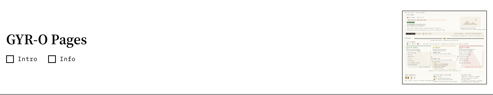
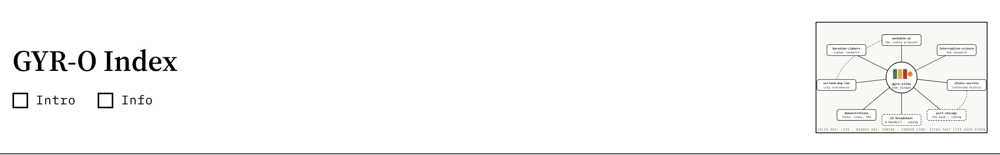
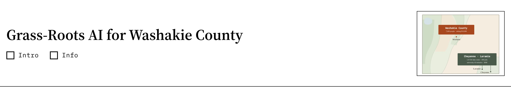
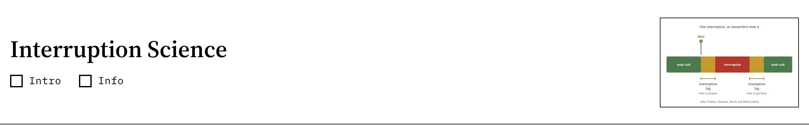
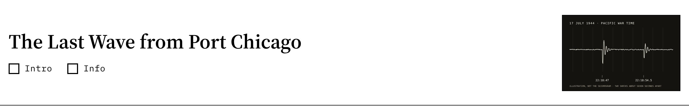
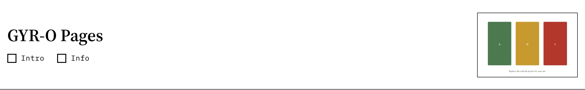

Each site shown by its Lintel alone, the band that remains with Intro and Info both off: the title, the two boxes and the signature graphic. Click any one to open the site.






Not yet in GYR-O form
- worland-dog-law.online · Worland Dog Laws
- baconian-ciphers.online · Baconian Ciphers: One-Day Reports